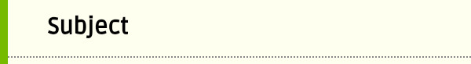

Files Panel
The Files Panel is the UI to the file manager. There are actions to create directory, copy, cut,
rename or delete files, ... etc. There are also actions to browse images in the current directory
and action to import/export images.

Toolbar
- Show contextmenu.
- Show images of current directory in an ImagePicker.
- Create a new page using a templateor open/edit an existing page.
- This Cleanup action is only available when current directory is under the Recover tree. It remove recursively, under the current directory, all the files that are more than 14 days old and all the empty directories.

- Show contextmenu.
- Search for files with filename containing the search text, ignorecased.
- Show previous match.
- Show next match.
- Filename search text.
Contextmenu

- Mark selected file or, if the filename input is empty, all files in the current directory recursively for copy.
- Mark the selected file or, if the filename input is empty, all files under the current directory recursively for move. The files are not deleted until they are paste somewhere.
- Paste files that has been marked for copy/move. A
confirmation dialogshow files to be copy/move, files that would overwriting existing files and files that cannot be copied/moved. Individual file can be selected or deselected for the action there.
- Delete file/directory/tree. If the filename input is not empty, it delete the specified file. Otherwise, it delete all files in the current directory. If there are only sub-directories in the current directory, it delete all the sub-directories recursively.
- Create directory.
- Rename file/directory.
To rename a directory, go into to the directory, left the filename input empty and click the rename button.
- Toggle the nobackup marker file. The backup action ignore everything under a directory with the marker file.
- Remove all empty directories recursively under the current directory.
- Goto the directory that contains the current document.
- Open/create documents.
- Import image from Photo Library.
- Export selected image to Photo Library.
- Import media file (PDF, audio and image) from the backup directories.
- Export selected file (PDF, audio, image, HML, CSS) to the backup directories.
- View selected media file (PDF, audio and image), through an Activity Chooser, at an external viewer. Note that if there is only one activity that would handle the media exported by this Share action, Android may open the media directly with that activity instead of going through an Activity Chooser. Note that all the Import, Export and Share actions require login as they work with the backup directories or external activities.

- Show the search bar or the toolbar.

{kind=link}
{kind=link}
{kind=link}
{kind=link}
There
are restrictions on filenames for portability and safety reasons:
-
Only Letter or Digit Unicode characters and the following ASCII punctuation characters are allowed: !"$&'()*+,-.:<=>@^_`{|}~. That is ?#%[];\ are NOT allowed. The / character is the path separator and would not be consider as part of a filename.
-
Space character (0x20) is allowed in the middle of the filename, but the filename must not start or ends with spaces.
-
Tab (0x09), non-break space (0xa0) and line breaks characters (0x0a, 0x0d, ... etc) are NOT allowed.
The
directory path panel
shows the path to the current directory. Parent directories are links.
Click on one of the link goes directly to that parent directory. The root () symbol represents the root
directory. Click on it to go directly to the root directory.

The directory tree panel show the content of the current directory. Click on a directory to go into that directory. Click on a file to enter the name to the filename input. Click on the size info at the
left of a file entry to open the file directly.
There are a number of predefined directories at the root. User is not allowed to create/delete
directories/files at the root. All user created documents are located at the /Home or the /Private
directory.
- /Home The public home directory contains all the public (unencrypted) user documents. When user is not logged in, this is the only directory where user may create documents.
- /Private The private home directory contains all the private (encrypted) user documents. All documents and images created in the /Private directory are encrypted automatically on write and decrypted automatically on read. You can copy or move documents between the /Home and the /Private directory. This directory and the files under it are not visible/accessible when user is NOT logged in.
- /Restore/Home This directory contains the public user documents restored by the Restore action. Files in this directory are not editable. But user may read/copy/delete files in this directory. All files in this directory are removed when another Restore action takes place.
- /Restore/Private This directory contains the private user documents restored by the Restore action. This directory is visible only when user is logged in. Otherwise, it behaves very much like the /Restore/Home directory.
- /Recover/Home, /Recover/Private These directories contains the recovery or backup files. Files are readonly but deletable. Recovery file, that ends with ~recovery~ is saved if you leave the app while in editing mode or when you cancel edit. When you save a document, the old version is moved to the /Recover tree as a backup. You may simply copy files from here in case you want to recover the unsaved content or the previous version.
- Note that like files in the /Restore directory, relative links in documents in the /Recover directory may be broken. However, the links would work when the file is restored to its previous location.
- /assets This read only directory contains user accessible assets, eg. templates, the manual, sample images, ... etc. These files are read only and cannot be deleted.
- /Home/drafts, /Home/blog New documents are usually created in the same directory as the current document in the editing area. In some cases, when no suitable directory can be found, /Home/drafts would be used as default. The Blog template, however, create new documents in /Home/blog by default.
- /Private/drafts, /Private/blog When user is logged in, these directories are used as default instead of the /Home/drafts and /Home/blog directories above.